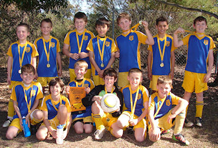
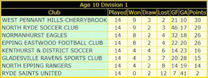
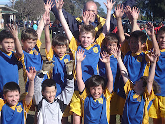
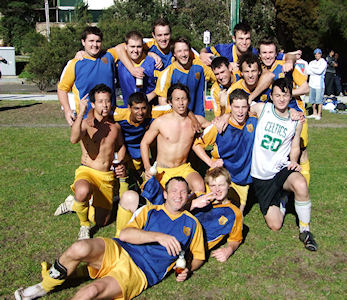

|
|
|
|
|
|
|
|
|
|

The Grand Final was the last stop on what has been a very successful season for
this great bunch of Under 10 Division 1 players. They walked onto the field each
week with determination and intent, and scored a prolific number of goals that
kept their team buoyed at the top of the division ladder for most of the year.


Their 46-goal tally was way ahead of their closest rivals and it was unfortunate
that a loss in the final round of the tournament was the only catalyst to relieve
them of the premiership title. Still, this is a young team that remain as undaunted
by any loss as they are by any massive win, and they marched into the finals against
their worthy opponents West Pennant Hills with the same spirit and tenacity that
they had in the first game of the season. The grand final itself was much the same
as all grand finals tend to be. A heightened sense of place and occasion usually
renders the match a hard-fought - and usually unspectacular - affair with neither
team giving any quarter for the full duration of the contest.
A North Ryde corner and charging header by Eli nearly tipped the scales in our
favour but the keeper collected the ball in the air and the scores remained level.
The battle raged on unabated with the play switching from one side of the field to
the other at regular intervals, everyone playing at maximum capacity to find that
elusive thread into the opposition goals. There were no real opportunities on goal
for either side and the score remained 0 - 0 at the end of normal time. Extra time
resumed where full-time left off and the fitness of both teams were put to the test
as they sought that golden-goal opportunity in the twenty minutes that had been added
to the game. It was a brave combat by both sides but each were ultimately kept at bay
by the other, ending the match in a 0 - 0 draw and declaring both North Ryde and West
Pennant Hills as joint, and deserving championship winners for the 2010 season.

Well done to our Div 1 team who played with pride and unassailable determination all
year, and demonstrated superb fitness on the field during a season where they only had
two substitutes at their disposal. Being declared a winner for the 2010 season was a
deserving cherry-on-the-cake reward for a team that has tried so hard since they got
together three years ago in under eights, and who have delighted their family and
friends on the sidelines with many hours of skilful and spectacular football. Well
done guys, we are all very proud of you.

- Mark Howard
|
|
|
|
|
|

What a great way for the team to finish the year!
The grand final game came as a bit of a shock to some of us as we had won the
first round of semis but went down in the second round. Emails were circulating
for days with high hopes and then low hopes as the goals for and against our
team were calculated by team members and their parents to determine whether we
actually made it into the grand final.
Midway through the week we received the official news that yes, we were in the
grand final and that we were to face our arch rivals - the Redbacks. From then
on we had the 'win at all costs' attitude.
With a powerful training session under their belt the boys (only 11 of them)
arrived on Saturday morning ready to play their guts out. Our game plan was
simple, to get a goal early and keep building from there. Within the first few
minutes of the game that's just what they did. Once they secured their first
goal they kept on the attack and spent pretty much the majority of the game in
the other team's half taking shots (against a team that was very strong in
defence).
For the last 10 minutes of the game each player showed fantastic defensive skills
and stamina as the Redbacks fought to stay in the game. Every player on the team
gave 110 percent on the day, and they were rewarded with a win on what was a very
tight game. This match was definitely a whole team victory.
Well done to the team, and thanks for a great season.
- Phil (Coach)
|
|
|
|
|
|

Arriving at Morrison Bay 2 we were greeted by a heavy wind which would prove to
play a part in the game. The nerves were certainly in the legs and for most had
been throughout the week and it was good to finally get into the warm up and kick
the ball around.
Having lost once and won once to our opposition we knew going into the match that
it would be a tough test, but we felt that if we could play to our potential then
we would be the favorites.
We won the toss and chose to run with the wind to try to get the early upper hand.
The wind proved useful as the Ryde Panthers barely left their own half for the
first 45 minutes, and midway through the first 45 from the left side of midfield
as he has done all season Sam Beesley from 20 yards put in a beautiful low shot
to the far corner and despite getting a couple of finger tips to it the goal
keeper was unable to parry it away and the Nuggets were up 1-0.
Half time saw a calm North Ryde team take a drink and plan out the second half.
Be tougher was the talk and this is how it played out, the boys won all the 50/50
balls and showed that we wanted it more than the Panthers.
Our second goal came after their goal keeper handled the ball outside his box -
close to the side line. Some quick thinking from Sam Beesley allowed him to take
a quick free kick across the goal mouth to Alex Tay and Alex tapped it in for a
2-0 lead.
At 2-0 up the boys were confident, however it was at this stage that Ryde Panthers
enjoyed their only dominant period of the game and for 10-15 minutes they had us
under pressure, but as our defence has shown all year (conceding the least goals
in the league) we are tough to break, and they couldn’t get one back.
The sealer came as a ball was played across the goal late in the game to an
unmarked James Hall who calmly slotted it pass their goal keeper for a 3 - 0
victory.
Well done boys, we showed our real form in our biggest three matches of the
season. To win our two semis like we did and then put three away in the final
was a brilliant effort.
- Paz
|